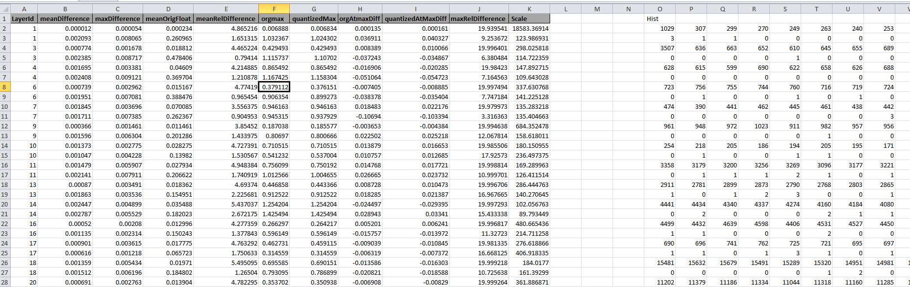
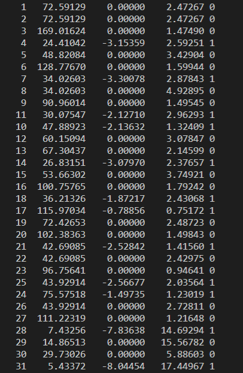
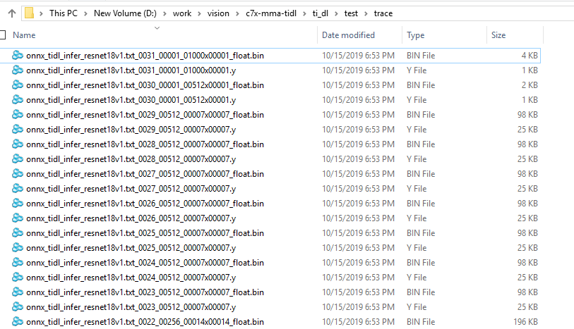
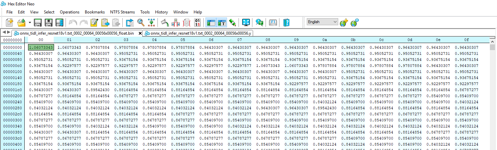
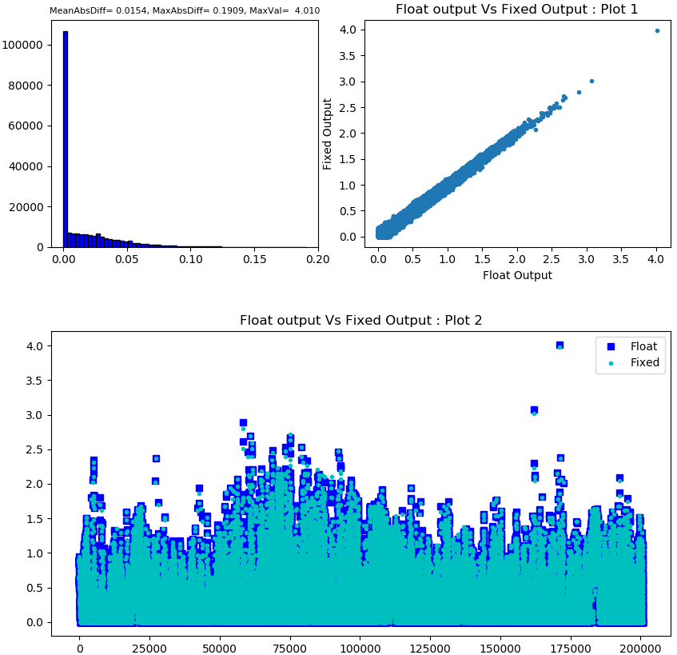
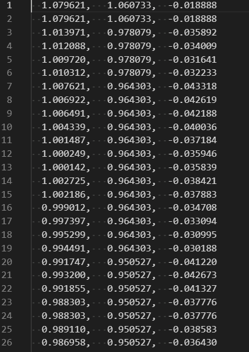
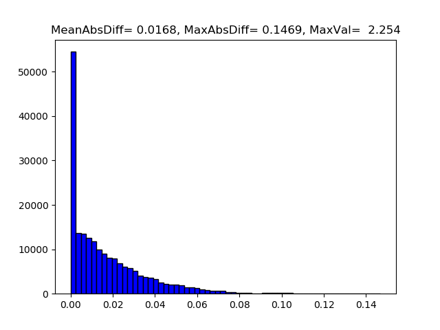

Steps to Debug Error Scenarios for target(EVM) execution
- It is recommended to first test the inference of a given network in host emulation mode to make sure output is as per expectation.
- If execution on target(EVM) is not completing then user can enable more verbose logs by setting debugTraceLevel = 2 in the TIDL-RT inference configuration file. This option enables more detailed traces which will help in identifying the layer which is behaving unexpectedly.
- If the user is finding target(EVM) execution output for a given network to be different from the host emulation output for the same, then they should follow the following steps to identify which layer causes the first mismatch:
- Enable layer level fixed point traces in both host emulation and EVM execution. This can be done by setting writeTraceLevel = 1 in the TIDL-RT inference configuration file.
- Run the TIDL-RT inference on host emulation mode. Layer level traces will be generated inside ti_dl/test/traces folder. If this folder is missing, please create the same. Keep a copy of this trace folder, lets call it traces_ref
- Repeat the above step for target(EVM) execution. Keep a copy of this trace folder, lets call it traces_target
- Use any binary comparison tool (e.g. beyond compare, diff, cmp etc) to compare the traces_ref and traces_target folder
- The outputs are expected to bit match and if any particular layer output is mismatching in these two modes then the first layer where mismatch is observed is the layer which needs to be reported.
- debugTraceLevel and writeTraceLevel can also be enabled from SDK application. For these option to work on target(EVM) device it is important to follow all the steps as mentioned here
Steps to Debug Functional Mismatch in Host emulation
- The following steps are suggested, when user find the functional issue (Lower accuracy) while running inference using TIDL-RT compared to Floating model inference on Training framework (Caffe, tensorflow, Pytorch etc). All these steps need to be performed in host emulation mode rather than on target(EVM) device. Once user achieves the acceptable accuracy then, host emulation and target execution on device can be bit-matched.
- First step is to run the model in floating point mode and see if accuracy is same as what you get in your training framework. To run the model in float you will have to set numParamBits = 32 in TIDL-RT import config file and run import and inference again. (Note that this flow is not optimized for our SOC's and is supported only in host emulation mode and it’s meant only for debug purpose).
- If this accuracy matches then this indicates that there is no gap in pre-processing done on the input in your training framework and TIDL-RT inference.
- The next step would be to try advanced calibration options to improve the accuracy. We recommend that you try your model with calibrationOption = 7 with sufficient number of images used for calibration (Typically any number higher than 50 gives good results). The details of this option can be found in here, refer section on Advanced Bias Calibration.
- Even after advanced calibration if the result 8-bit quantization results are not acceptable then 8-bit quantization is not sufficient for your network. We recommend to try 16-bit quantization for your network (Note that this option will results into more compute time for inference).
- If 16 bit results are as per expectation then user can try mixed precision to manually increase the precision of activations/parameters of certain layers. The details of this option can be found in here, refer section on Mixed Precision. To choose which layers user will have to analyze the activation/parameters statistics. User can refer here to view sample script given to generate such statistic or if required they can extend it to generate more statistics.
- The accuracy is not acceptable with floating point inference also then, this typically indicates that pre-processing applied in your training framework and the one applied in TIDL are not the same. Follow the steps mentioned in Steps to narrow down pre-processing mismatches section to narrow down the issues related to pre-processing.
Steps to narrow down pre-processing mismatches
- Follow the following steps to narrow down the mismatches because of differences in pre-processing in TIDL-RT compared to the pre-processing applied in the training framework.
1. Input Color Format
- If you are using inFileFormat = 0 or 2 (Compressed images) and the decoded image could be using the color format as RGB or BGR in the training code. This color format shall be properly informed to TIDL-RT import step by setting inDataFormat.
- If the user using openCV in the training code, the decoded image default would be BGR format.
- If the user using PIL (Pillow) in the training code, the decoded image default would is RGB format.
- Most of the models trained in Pytorch and Tensorflow are in RGB format. Note: This may not be always true.
- Most of the models trained Caffe are in BGR format. Note: This may not be always true.
- You can set this format by appropriately setting inDataFormat variable in TIDL-RT import config file. Set the value to be 0 if you are using BGR planar format or set it to 1 if you are using RGB planar format.
2. Image Normalization
- In the training code, image normalization is the most common practice.
- Various normalization methods are used by user in their training code based on the training framework.
- These normalization information can be configured in TIDL-RT through importer step.
- Set inDataNorm = 1 && corresponding inMean and inScale parameters to enable this
- In TIDL inMean and inScale values are uses as follows on the input RGB/ BGR tensor having a range 0 - 255 for each channel.
- image = image - inMean
- image = image * inScale
- The above computation is implemented in TIDL-RT by adding a BatchNorm Layer before passing input tensor to first processing layer.
- The advantage of doing this within TIDL-RT inference engine is that typically this BatchNorm layer can get merged to following convolution layers and hence the pre-processing can come at no extra run time performance cost. Note that for this merge to happen foldPreBnConv2D should be set to 1 ( default value is 1).
- For example in Caffe, if a user has below transformation parameter, then inMean and inScale shall be programmed as below
transform_param {
scale: 0.017
mean_value: [103.94, 116.78, 123.68]
}
- inMean and inScale shall be programmed as below in import configuration file for the above transform
inDataNorm = 1
inMean = 103.94, 116.78, 123.68
inScale = 0.017 0.017 0.017
- In PyTorch, if the user is using below transformation on image with range of 0 to 1
transform = transforms.Compose([
transforms.ToTensor(),
transforms.Normalize([0.485, 0.456, 0.406], # mean
[0.229, 0.224, 0.225]) # standard_deviation
])
- The above is equivalent of below
image = image(in Float32) / 255.0
image = image - mean
image = image / standard_deviation
- So the inMean and inScale shall be programmed as below in import configuration file for the above transform
inMean = (mean*255) (In float)
inScale = 1/(255*standard_deviation) (In float)
inMean = 123.675 116.28 103.53
inScale = 0.017125 0.017507 0.017429
Comparing the input Tensor to TIDL-RT with Reference
- It is important to match the input tensor to TIDL net with the input tensor of network which was trained.
- Save the input tensor from the training code that you are using in float format.
- Use writeTraceLevel = 3 in TIDL-RT import config file to write the layer level floating point traces from the TIDL-RT to files.
- By default the data normalizing batchNorm layer is merged to following convolution layer. So set foldPreBnConv2D = 0 in TIDL-RT import config file to avoid this.
- Compare the output of this batchNorm layer with input tensor from training code. Refer Link
Weights Quantization statistic Analysis
- The TIDL-RT import tool generates parameter quantization statistics at end of model import. This information is saved as "*_paramDebug.csv" file in the same location as output TIDL model files. Following is a sample example of information generated in this file ( Note: This information is calculated using the floating point weights and quantized weights in function "TIDL_CompareParams" (File : ti_dl/utils/tidlModelImport/tidl_import_quantize.cpp). User can refer to this code for more information on each parameter).

Weights Quantization statistic
The important information that needs to be check during debugging is mean and max of all the absolute float parameters "meanOrigFloat" and "orgmax". If the orgmax is much higher than the meanOrigFloat then there is possibility of higher quantization loss. Refer (!tidl_fsg_quantization.md::did_tidl_quantization_Types) to reduce the quantization loss in inference. User can compare this file with 16-bit and 8-bit parameters.
Feature Map Scale Analysis
- If user could not find any information regarding the quantization error, the next steps is to analyze the feature/activation maps scales used during the quantization for the same.
- This can be achieved by enabling layer level traces from TIDL-RT inference by setting below
debugTraceLevel = 1
writeTraceLevel = 3
- When user runs the inference, below information is printed in the console. The first column here is data ID for which the trace data is being dumped. The second column represents the scaling factor for the tensor. The third and the fourth columns represent the minimum and maximum values in the tensor, respectively.The fifth column is the data element type of the tensor.

Feature Map Scale Console Log
- If the minimum and maximum values are in the range of the 1 to 4 then, minimum quantization error are expected for these layers. If the range is large (> 32), and has big variation between layers, then it is recommended increase the activation range using the below TIDL-RT inference create time parameter:
quantRangeExpansionFactor = 1.5
Feature Map Comparison with Reference
- Even after setting above, if the quantization error is high then user needs to analyze the dumped trace. At end of above inference traces, layer level traces are generated in the ti_dl/test/trace folder.
- The inference software generates two files for each data ID. Note that data Id can be different from layer Id, there are two ways to find this mapping, first way is to read the mapping from the *layer_info.txt file which gets generated in the same folder as the TIDL model output location. Second way is to read the output of model visualization tool (*.svg file, gets generated in the same folder as TIDL model output location), here this information can be read from each layer box inside the square brackets [layerIdx, dataIdx].

Feature Map Trace files
- These files can be viewed using generic binary file viewers

Feature Map Trace Float view
- User can generate these traces for floating/16-bit and 8-bit settings in import configuration file and compare them using below sample scripts.
Script 1 : Layer level activation comparisons :
- Below script can be used to generate activation comparison plots for all the layers of the network of TIDL-RT floating point output vs TIDL-RT fixed point ( 8 bit output)
Usage : python script_name.py –im <import_config_file_name> –in <infer_config_file_name>
e.g. python script_name.py –im ../../test/testvecs/config/import/public/caffe/tidl_import_jacintonet11v2.txt –in testvecs/config/infer/public/caffe/tidl_infer_jacintonet11v2.txt
- This script generates floating point comparison plot by running TIDL-RT in float mode and then running the TIDL-RT inference in 8 bit mode. Currently it generates following 3 plots :
- Plot 1 : Histogram of difference
- Plot 2 : TIDL fixed point inference output plotted against TIDL Floating inference output
- Plot 3 : TIDL Floating inference output and TIDL fixed point inference output plotted in the same plot
- Typically no single plot is enough to conclude the difference and each gives certain way to compare the two outputs.
- Plots will be generated in the same folder as the script inside comparison_output/activations
- A sample plot is as shown as below :

Feature Map Activation comparison output
- Script to generate these plots for reference :
import numpy as np
import argparse
import matplotlib
import matplotlib.pyplot as plt
import os
import sys
import subprocess
import shutil
debug = 0
parser = argparse.ArgumentParser()
parser.add_argument('-im', '--import_cfg',
default='../../test/testvecs/config/import/public/caffe/tidl_import_jacintonet11v2.txt')
parser.add_argument('-in', '--infer_cfg', default='testvecs/config/infer/public/caffe/tidl_infer_jacintonet11v2.txt')
# TO DO Yet add support
parser.add_argument('-p', '--precision', default='8bit')
parser.add_argument('-o', '--outdir', default='comparison_output')
# parser.add_argument('-l', '--list_file', default='testvecs/config/config_accuracy_list.txt')
args = parser.parse_args()
numParamBits = {
"8bit": ['8'],
"16bit": ['16']
}
def save_error_plot(float_output, fixed_output, axes):
mx = np.max(float_data)
mn = np.min(float_data)
org_diff = (fixed_data - float_data)
combined = np.vstack((float_data, fixed_data, org_diff)).T
# #np.savetxt("figs\\"+str(i).zfill(4)+"_float.txt", combined, fmt='%10.6f, %10.6f, %10.6f')
abs_diff = abs(fixed_data - float_data)
maxIndex = np.argmax(abs_diff)
max_abs_diff = np.max(abs_diff)
mean_abs_diff = np.mean(abs_diff)
var_abs_diff = np.var(abs_diff)
axes.hist(abs_diff, color='blue', edgecolor='black', bins=60)
# image_txt = "mean = " + str(mean) +", Var = "+ str(var) +", MAx = "+ str(mx)
image_txt = "MeanAbsDiff=%7.4f, MaxAbsDiff=%7.4f, MaxVal=%7.3f" % (mean_abs_diff, max_abs_diff, mx)
#plt.title(image_txt)
axes.set_title(image_txt, fontdict = {'fontsize' : 8})
def save_pc_ref_plot(float_output, fixed_output, axes):
axes.set_title("Float output Vs Fixed Output : Plot 1")
axes.set_xlabel('Float Output')
axes.set_ylabel('Fixed Output')
axes.plot(float_output, fixed_output, '.')
def save_pc_ref_plot2(float_output, fixed_output, axes):
axes.set_title("Float output Vs Fixed Output : Plot 2")
axes.plot(float_output, "bs", label = "Float")
axes.plot(fixed_output, "c.", label = "Fixed")
axes.legend(loc='upper right', frameon=True)
current_dir = os.getcwd();
tidl_dir = os.path.abspath(os.path.join(current_dir, "../../../"))
import_dir = os.path.join(tidl_dir, "ti_dl/utils/tidlModelImport")
infer_dir = os.path.join(tidl_dir, "ti_dl/test")
output_directory = os.path.join(current_dir, args.outdir)
float_dir = os.path.join(current_dir, "out_float");
float_dir = os.path.join(float_dir, "");
fixed_dir = os.path.join(current_dir, "out_8bit");
fixed_dir = os.path.join(fixed_dir, "");
if sys.platform == 'win32':
import_tool = 'out/tidl_model_import.out.exe'
tb_tool = 'PC_dsp_test_dl_algo.out.exe'
comment_lead = '::'
shell_attribute = False
elif sys.platform == 'linux':
import_tool = './out/tidl_model_import.out'
tb_tool = './PC_dsp_test_dl_algo.out'
comment_lead = '#'
shell_attribute = True
else:
msg(0, 'Unrecognised system: %s' % sys.platform)
sys.exit(1)
if debug == 0 :
if os.path.exists(os.path.join(current_dir, "out_8bit")):
shutil.rmtree(os.path.join(current_dir, "out_8bit"))
if os.path.exists(os.path.join(current_dir, "out_float")):
shutil.rmtree(os.path.join(current_dir, "out_float"))
if os.path.exists(output_directory):
shutil.rmtree(output_directory)
os.mkdir("out_8bit")
os.mkdir("out_float")
os.mkdir(output_directory)
os.mkdir(os.path.join(output_directory, "activations"))
# First do the import in floating point
os.chdir(import_dir)
print("Floating Point import : Start")
import_command_base = import_tool + " " + args.import_cfg;
import_command_float = import_command_base + " --numParamBits 32"
subprocess.call(import_command_float,shell=shell_attribute)
print("Floating Point import : End")
# Inference to collect layer level traces of floating point
os.chdir(infer_dir)
print("Floating Point inference : Start")
infer_command_base = tb_tool + " s:" + args.infer_cfg + " --writeTraceLevel 3 --debugTraceLevel 1 "
infer_config_float = infer_command_base + " --flowCtrl 1 " + "--traceDumpBaseName " + float_dir
print(infer_config_float)
subprocess.call(infer_config_float,shell=shell_attribute)
print("Floating Point inference : End")
# Delete other traces other than floating point
for item in os.listdir(float_dir):
if item.endswith(".y"):
os.remove(os.path.join(float_dir, item))
os.chdir(import_dir)
import_command_fixed = import_command_base + " --numParamBits " + numParamBits[args.precision][0]
print(import_command_fixed)
subprocess.call(import_command_fixed,shell=shell_attribute)
os.chdir(infer_dir)
infer_config_fixed = infer_command_base + "--traceDumpBaseName " + fixed_dir
print(infer_config_fixed)
subprocess.call(infer_config_fixed,shell=shell_attribute)
for item in os.listdir(fixed_dir):
if item.endswith(".y"):
os.remove(os.path.join(fixed_dir, item))
i = 0
for item in os.listdir(float_dir):
fileHandle = open(os.path.join(fixed_dir, item), 'rb')
fixed_data = np.fromfile(fileHandle, dtype=np.float32)
fileHandle.close()
fileHandle = open(os.path.join(float_dir, item), 'rb')
float_data = np.fromfile(fileHandle, dtype=np.float32)
fileHandle.close()
fig = plt.figure(figsize=(10, 10))
axes1 = plt.subplot2grid((16, 16), (0, 0), rowspan=6, colspan=7)
axes2 = plt.subplot2grid((16, 16), (0, 8), rowspan=6, colspan=8)
axes3 = plt.subplot2grid((16, 16), (8, 0), rowspan=8, colspan=16)
save_error_plot(float_data, fixed_data, axes1)
save_pc_ref_plot(float_data, fixed_data, axes2)
save_pc_ref_plot2(float_data, fixed_data, axes3)
filename = os.path.join(os.path.join(output_directory, "activations"), str(i).zfill(4) + "_activations.png");
plt.savefig(filename)
plt.clf()
plt.close(fig)
i = i + 1
Note : These scripts are given only for reference and may not work in all kind of environment. Validated with python 3.8
Script 2 : Floating point comparison for a specific list of layers
import numpy as np
import argparse
import matplotlib
import matplotlib.pyplot as plt
parser = argparse.ArgumentParser(description='My Arg Parser')
parser.add_argument('-i', '--in_file_list', default='trcae_files_list.txt', help='test file containinglist of files to compare', required=False)
args = vars(parser.parse_args())
#dir *float* /o:d /s/b
def save_error_plot(list,i, mean, var, mxd, mx):
plt.hist(list, color = 'blue', edgecolor = 'black',bins=60)
#image_txt = "mean = " + str(mean) +", Var = "+ str(var) +", MAx = "+ str(mx)
image_txt = "MeanAbsDiff=%7.4f, MaxAbsDiff=%7.4f, MaxVal=%7.3f" %(mean, mxd, mx)
plt.title(image_txt)
plt.savefig("figs\\"+str(i).zfill(4)+"_abs_diff_hist.png")
plt.clf()
def main():
with open(args['in_file_list']) as f:
content = f.readlines()
f.close()
print("%5s, %12s, %12s, %12s, %12s %12s, %12s, %12s" %("Idx", "Min", "Max", "max_abs_diff", "max_diff_idx", "mean_abs_diff", "var_abs_diff", "Scale"))
for i, line in enumerate(content):
values = line.split()
fileHandle = open(values[0], 'rb')
tidl_data = np.fromfile(fileHandle, dtype=np.float32)
fileHandle.close()
fileHandle = open(values[1], 'rb')
ref_data = np.fromfile(fileHandle, dtype=np.float32)
fileHandle.close()
mx = np.max(ref_data)
mn = np.min(ref_data)
org_diff = (tidl_data - ref_data)
combined = np.vstack((ref_data, tidl_data, org_diff)).T
np.savetxt("figs\\"+str(i).zfill(4)+"_float.txt", combined, fmt='%10.6f, %10.6f, %10.6f')
abs_diff = abs(tidl_data - ref_data)
maxIndex = np.argmax(abs_diff)
max_abs_diff = np.max(abs_diff)
mean_abs_diff = np.mean(abs_diff)
var_abs_diff = np.var(abs_diff)
save_error_plot(abs_diff, i,mean_abs_diff,var_abs_diff,max_abs_diff,mx)
rng = max(np.abs(mx), np.abs(mn))
if(mn < 0):
scale = 127/rng if rng!=0 else 0
tidl_data = np.round(tidl_data * scale)
tidl_data = tidl_data.astype(np.int8)
else:
scale = 255/rng if rng!=0 else 0
tidl_data = np.round(tidl_data * scale)
tidl_data = tidl_data.astype(np.uint8)
tidl_data = np.asarray(tidl_data, order="C")
with open(values[0]+"viz.y",'wb') as file:
file.write(tidl_data)
file.close()
print("%5s, %12.5f, %12.5f, %12.5f, %12d, %12.5f, %12.5f %12.5f" %(i, mn, mx, max_abs_diff, maxIndex, mean_abs_diff, var_abs_diff, scale))
if __name__ == "__main__":
main()
The input list file shall contain the trace file names as below:
D:\trace_8-bit\onnx_tidl_infer_resnet18v1.txt_0001_00064_00112x00112_float.bin D:\trace_16-bit\onnx_tidl_infer_resnet18v1.txt_0001_00064_00112x00112_float.bin
D:\trace_8-bit\onnx_tidl_infer_resnet18v1.txt_0002_00064_00056x00056_float.bin D:\trace_16-bit\onnx_tidl_infer_resnet18v1.txt_0002_00064_00056x00056_float.bin
- If user passes the file paths to 8-bit and 16-bit traces , then this scripts would write the float values and differences to a text files like below

Feature Map Trace Float view - Using numPy
- This script also generates below histogram for each tensor. If the mean difference is close to maximum difference then we have, then this particular tensor has higher quantization loss.

FM Difference Histogram
Note : These scripts are given only for reference and may not work in all kind of environtment. Validated with python 3.8
Reference Traces from Frameworks
- If the TIDL-RT floating point inference (numParamBits = 32) is also not providing expected accuracy even after matching the pre-processing as described in Here and Here, then there is possibility that some of the layers have very high quantization loss or functionally not working as expected. To find such layers, user need to generate the layer level floating point traces from training frameworks/ PC Runtime codes like Caffe, TensorFlow, MXNet etc. and compare against TIDL-RT floating point inference output.
- Since TIDL-RT merges many layers during import of the model, user need know the tensor name in original model corresponding to each data ID in the TIDL model. User can refer the "*_netLog.txt" in the same path as imported model
- The outDataNames, here corresponds to the tensor name in the original network. User can use this information and one of the reference scripts below to generate the trace information.
- All the scripts provided below are for reference purpose only. These may not directly work with any version. User may need to update scripts as per the latest API in the corresponding framework by taking help from community forums.
Example script to Reference output from Caffe
import os
import os.path
import time
import sys
import ntpath
model_path = "/mnt/d/work/vision/c7x-mma-tidl/ti_dl/test/testvecs/models/public/caffe/resNet10/deploy.prototxt"
pretrained_path = "/mnt/d/work/vision/c7x-mma-tidl/ti_dl/test/testvecs/models/public/caffe/resNet10/resnet10_cvgj_iter_320000.caffemodel"
input_name = "/mnt/d/work/vision/c7x-mma-tidl/ti_dl/test/testvecs/input/airshow.jpg"
import caffe
caffe.set_mode_cpu()
from caffe.proto import caffe_pb2
import cv2
import numpy as np
import math
import string
from google.protobuf import text_format
def writeNPAryAsRaw(ipFrame, fileName, opDataType=np.float32, opScale=1):
if opDataType != np.float32:
qFrame = np.rint(ipFrame * opScale)
else:
qFrame = ipFrame
fileHandle = open(fileName, 'wb')
ip1DAry = np.reshape(qFrame, (1, np.prod(qFrame.shape)))
ip1DAry = ip1DAry.astype(opDataType)
fileHandle.write(ip1DAry)
fileHandle.close()
def predict(model_path, pretrained_path, image, frameNum, blobs=None):
net = caffe.Net(model_path, pretrained_path, caffe.TEST)
input_dims = net.blobs['data'].shape
print ("input dim from desc", input_dims[2], input_dims[3])
batch_size, num_channels, input_height, input_width = input_dims
caffe_in = np.zeros(input_dims, dtype=np.float32)
caffe_in[0] = image.transpose([2, 0, 1])
out_blobs = net.forward_all(blobs, **{net.inputs[0]: caffe_in})
return out_blobs, net
def getLayerByName(net_proto, layer_name):
for layer in net_proto.layer:
if layer.name == layer_name:
return layer
return None
def infer():
caffe.set_mode_cpu()
mean_pixel = [0, 0, 0]
num = 0
use_cur_scale = True
net_proto = caffe_pb2.NetParameter()
text_format.Merge(open(model_path).read(), net_proto)
# moved image reading out from predict()
image = cv2.imread(input_name, 1);
image = cv2.resize(image, (224, 224))
image = image.astype(np.float32)- mean_pixel
layer_names=['prob', 'data', 'data_scale', 'conv1_relu', 'layer_64_1_relu2','layer_64_1_conv2','layer_64_1_sum','layer_128_1_relu1','layer_128_1_relu2']
blob_names =['prob', 'data', 'data_bn', 'conv1','layer_64_1_conv1','layer_64_1_conv2', 'layer_64_1_sum','layer_128_1_bn1', 'layer_128_1_conv1']
blob_type =['int8', 'uint8', 'int8', 'uint8', 'uint8', 'int8', 'int8', 'uint8', 'uint8']
out_blobs, net = predict(model_path, pretrained_path, image, num, blobs=blob_names)
dataOut = out_blobs['prob']
print(dataOut.shape)
argIndex = np.argsort(np.squeeze(dataOut))[::-1][:10]
print (argIndex)
if 'data' in out_blobs.keys():
writeNPAryAsRaw(out_blobs['data'], 'data'+'_orgIn'+'.y', opDataType=np.uint8, opScale=1)
for blobName in out_blobs.keys():
layerIndex = blob_names.index(blobName)
layerName = layer_names[layerIndex]
print(layerName, blobName)
layerParam = getLayerByName(net_proto, layerName)
min_val = np.min(out_blobs[blobName])
max_val = np.max(out_blobs[blobName])
elementType = blob_type[layerIndex]
scale = 255/np.abs(max_val) if elementType=='uint8' else 127/np.maximum(np.abs(max_val), np.abs(min_val))
print(scale)
writeNPAryAsRaw(out_blobs[blobName], blobName+'_float32'+'.y', opDataType=np.float32)
if elementType=='int8':
out_blobs[blobName] = out_blobs[blobName] + 128/scale
writeNPAryAsRaw(out_blobs[blobName], blobName+'_'+elementType+'.y', opDataType=np.int8, opScale=scale)
else :
writeNPAryAsRaw(out_blobs[blobName], blobName+'_'+elementType+'.y', opDataType=np.uint8, opScale=scale)
def main():
infer()
if __name__ == '__main__':
main()
Example script to Reference output from MxNet for ONNX
import mxnet as mx
import numpy as np
from collections import namedtuple
from mxnet.gluon.data.vision import transforms
from mxnet.contrib.onnx.onnx2mx.import_model import import_model
import os
import argparse
parser = argparse.ArgumentParser(description='My Arg Parser')
parser.add_argument('-m', '--model', default='../../test/testvecs/models/public/onnx/squeezenet1.1.onnx', help='Input Onnx model to load', required=False)
parser.add_argument('-i', '--image', default='../../test/testvecs/input/airshow.jpg', help='Input Image to infer', required=False)
parser.add_argument('-t', '--trace_enable', type=int, default=1, help='Set 1 to enable trace', required=False)
parser.add_argument('-d', '--dir_trace', default='trace/', help='Base Directory for trace', required=False)
parser.add_argument('-b', '--input_tensor_name', default='data', help='Input tensor name', required=False)
parser.add_argument('-r', '--rgb_input', type=int, default=1, help='Input tensor RGB or BGR, set to 1 for RGB and 0 for BGR', required=False)
parser.add_argument('-p', '--pre_proc_type', type=int, default=0, help='Pre-Processing type for Input', required=False)
args = vars(parser.parse_args())
print(args['model'])
#mx.test_utils.download('https://s3.amazonaws.com/model-server/inputs/kitten.jpg')
#mx.test_utils.download('https://s3.amazonaws.com/onnx-model-zoo/synset.txt')
with open('synset.txt', 'r') as f:
labels = [l.rstrip() for l in f]
# Enter path to the ONNX model file
model_path= args['model']
sym, arg_params, aux_params = import_model(model_path)
Batch = namedtuple('Batch', ['data'])
def get_image(path, show=False):
img = mx.image.imread(path, to_rgb=args['rgb_input'])
if img is None:
return None
return img
def preprocess(img):
transform_fn = transforms.Compose([
transforms.Resize(256),
transforms.CenterCrop(224),
transforms.ToTensor(),
transforms.Normalize([0.485, 0.456, 0.406], [0.229, 0.224, 0.225])
])
img = transform_fn(img)
img = img.expand_dims(axis=0)
return img
def preprocess_1(img):
transform_fn = transforms.Compose([
transforms.Resize(224, keep_ratio=True),
transforms.CenterCrop(224),
transforms.ToTensor(),
transforms.Normalize([0.5, 0.5, 0.5], [0.00390625, 0.00390625, 0.00390625])
])
img = transform_fn(img)
img = img.expand_dims(axis=0)
return img
def predict(path):
img = get_image(path, show=False)
if args['pre_proc_type'] == 0 :
img = preprocess(img)
elif args['pre_proc_type'] == 1 :
img = preprocess_1(img)
mod.forward(Batch([img]))
internal_dict = dict(zip(all_names, mod.get_outputs()))
#print(internal_dict[output_names[0]])
# Take softmax to generate probabilities
scores = mx.ndarray.softmax(np.squeeze(internal_dict[output_names[0]])).asnumpy()
if(args['trace_enable']):
print('Writing')
for name in all_names:
act = internal_dict[name]
act = act.asnumpy()
maxval = max(act.ravel())
minval = min(act.ravel())
rng = max(np.abs(maxval), np.abs(minval))
if minval >= 0 :
scale = 255/rng if rng!=0 else 0
else :
scale = 127/rng if rng!=0 else 0
#print(name, act.shape, minval, maxval)
act_shape = act.shape
file_name = name+str(act_shape)
file_name = file_name.replace("/","_").replace("(","_").replace(")","").replace(", ","x").replace(",","x").replace(" ","_")+".y"
file_name = "trace/"+file_name
print(file_name, act_shape, minval, maxval, scale)
with open(file_name+"float.bin",'wb') as file:
act_float = act.astype(np.float32)
act_float = np.asarray(act_float, order="C")
file.write(act_float)
file.close()
file_name = name+str(act_shape[-2:])
file_name = file_name.replace("/","_").replace("(","_").replace(")","").replace(", ","x").replace(",","x").replace(" ","_")+".y"
file_name = "trace/"+file_name
with open(file_name,'wb') as file:
#act = np.round(act * scale) + 128
act = np.round(act * scale)
act = act.astype(np.uint8)
act = np.asarray(act, order="C")
file.write(act)
# print the top-5 inferences class
scores = np.squeeze(scores)
a = np.argsort(scores)[::-1]
print(a[0:5])
for i in a[0:5]:
print('class=%s ; probability=%f' %(labels[i],scores[i]))
# Determine and set context
if len(mx.test_utils.list_gpus())==0:
ctx = mx.cpu()
else:
ctx = mx.gpu(0)
output_names = sym.list_outputs()
#print('Output : ')
#print(output_names)
if args['trace_enable']:
sym = sym.get_internals()
blob_names = sym.list_outputs()
sym_group = []
for i in range(len(blob_names)):
if blob_names[i] not in arg_params:
x = sym[i]
if blob_names[i] not in output_names:
x = mx.symbol.BlockGrad(x, name=blob_names[i])
sym_group.append(x)
sym = mx.symbol.Group(sym_group)
all_names = sym.list_outputs()
#print('All Output : ')
#print(all_names)
# Load module
mod = mx.mod.Module(symbol=sym, data_names=(args['input_tensor_name'],), context=ctx, label_names=None)
mod.bind(for_training=False, data_shapes=[(args['input_tensor_name'], (1,3,224,224))],
label_shapes=mod._label_shapes)
mod.set_params(arg_params, aux_params, allow_missing=True, allow_extra=True)
# Enter path to the inference image below
#img_path = 'kitten.jpg'
img_path = args['image']
predict(img_path)
Example script to Reference output from TensorFlow for Frozen Graph
import math
import tensorflow as tf
import time
import os
import numpy as np
import PIL
import PIL.Image as Image
tf.app.flags.DEFINE_string( 'graph_path', 'tmp\keras_frozen_optimized.pb', 'The directory where the graph was written to or an absolute path to a ')
tf.app.flags.DEFINE_string( 'input_file', '00010.png', 'Input image to be inferred ')
tf.app.flags.DEFINE_integer( 'infer_image_height', 32, 'Infer image height')
tf.app.flags.DEFINE_integer( 'infer_image_width', 32, 'Infer image width')
tf.app.flags.DEFINE_bool( 'write_activations', True, 'Write the activations to file')
tf.app.flags.DEFINE_string( 'input_node_names', '00010.png', 'Input image to be inferred ')
tf.app.flags.DEFINE_string( 'output_node_names', '00010.png', 'Input image to be inferred ')
tf.app.flags.DEFINE_string( 'preproc_type', 'inception', 'Type of pre proc to be applied ,eg: inception or vgg ')
FLAGS = tf.app.flags.FLAGS
def all_nodes():
nodes = [n for n in tf.get_default_graph().as_graph_def().node]
node_names = [n.name for n in tf.get_default_graph().as_graph_def().node]
ops = []
for node in nodes:
#print(node.name, node.op)
outputs = tf.get_default_graph().get_operation_by_name(node.name).outputs
if len(outputs) > 0:
op_name = outputs[0]
ops.append(op_name)
return ops, nodes, node_names
def infer_frozen_graph(graph_filename):
ext = os.path.splitext(graph_filename)[-1]
if ext == ".pbtxt":
with tf.gfile.GFile(graph_filename, 'r') as gfilep:
graph_def = tf.GraphDef()
graph_def.ParseFromString(gfilep.read())
elif ext == ".pb":
with tf.gfile.GFile(graph_filename, 'rb') as gfilep:
graph_def = tf.GraphDef()
graph_def.ParseFromString(gfilep.read())
with tf.Graph().as_default() as graph:
_ = tf.import_graph_def(graph_def, name='')
infer_image_height = FLAGS.infer_image_height
infer_image_width = FLAGS.infer_image_width
image = Image.open(FLAGS.input_file)
image = image.convert('RGB')
#image Net center crop
if FLAGS.preproc_type == "inception" :
image = crop_image_by_factor(image)
image = image.resize((infer_image_height,infer_image_width),resample=PIL.Image.BICUBIC)
image = np.array(image, dtype=np.float32)
if FLAGS.preproc_type == "inception" :
mean_array = [128, 128, 128]
elif FLAGS.preproc_type == "vgg" :
mean_array = [123.68, 116.78, 103.94]
else :
mean_array = [0, 0, 0]
mean = np.array(mean_array, dtype=np.float32) #Mean Substraction
mean.reshape(1, 1, 1, 3)
image = image.reshape(-1,infer_image_height,infer_image_width,3)
image = (image - mean)
with open("input_data.y",'wb') as file:
inDtaUint8 = image.astype(np.int8)
inDtaUint8 = inDtaUint8.transpose([0,3,1,2])
inDtaUint8 = np.asarray(inDtaUint8, order="C")
file.write(inDtaUint8)
if FLAGS.preproc_type == "inception" :
image = image / 128.0
tf.logging.info('Evaluating %s' % graph_filename)
with tf.Session() as sess:
input = graph.get_operation_by_name(FLAGS.input_node_names).outputs[0]
#predictions = graph.get_operation_by_name("jacintonet_v1_11_custom_stride/conv1a/Pad").outputs[0]
predictions, nodes, node_names = all_nodes()
init = tf.global_variables_initializer()
sess.run(init)
activations = sess.run(predictions, feed_dict={input:image})
if(FLAGS.write_activations):
print('Writing')
for act, node in zip(activations, nodes):
print(node.name, act.shape)
act_shape = act.shape
file_name = node.name+str(act.shape)
file_name = file_name.replace("/","_").replace("(","_").replace(")","").replace(", ","x").replace(",","x").replace(" ","_")+".y"
file_name = "trace/"+file_name
mx = max(act.ravel())
mn = min(act.ravel())
rng = max(np.abs(mx), np.abs(mn))
scale = 127/rng if rng!=0 else 0
print(file_name, act_shape, mn, mx, scale)
with open(file_name+"float.bin",'wb') as file:
act_float = act.astype(np.float32)
if len(act.shape)==4:
act_float = act_float.transpose([0,3,1,2])
act_float = np.asarray(act_float, order="C")
file.write(act_float)
file.close()
with open(file_name,'wb') as file:
if node.name!='input_ignore':
#act = np.round(act * scale) + 128
act = np.round(act * scale)
act = act.astype(np.uint8)
if len(act.shape)==4:
act = act.transpose([0,3,1,2])
act = np.asarray(act, order="C")
file.write(act)
#print(act)
idx = 0
for act, node in zip(activations, nodes):
print(node.name)
if node.name == FLAGS.output_node_names :
act_idx = idx
idx += 1
inferred_label = np.argmax(activations[act_idx])
inferred_label_top5 = np.argsort(activations[act_idx].ravel())[::-1][0:5]
print(inferred_label)
print(inferred_label_top5)
def crop_image_by_factor(image, factor=0.875):
width = image.size[0]
height = image.size[1]
crop_width = width*factor
crop_height = height*factor
half_the_width = image.size[0] / 2
half_the_height = image.size[1] / 2
image = image.crop((half_the_width - crop_width/2,
half_the_height - crop_height/2,
half_the_width + crop_width/2,
half_the_height + crop_height/2))
return image
def main(_):
infer_frozen_graph(FLAGS.graph_path)
if __name__ == '__main__':
tf.app.run()
Example script to Reference output from TensorFlow for TFLite model
from __future__ import absolute_import, division, print_function
import tensorflow as tf
import numpy as np
import PIL
import PIL.Image as Image
import matplotlib.pyplot as plt
tflite_mnist_model = '2019-08-15_20-04-59unet_model.tflite'
interpreter = tf.lite.Interpreter(model_path=tflite_mnist_model)
interpreter.allocate_tensors()
print("\nInput Tensors")
print(interpreter.get_input_details())
print("\nOutput Tensors")
print(interpreter.get_output_details())
input_details = interpreter.get_input_details()
output_details = interpreter.get_output_details()
input_shape = input_details[0]['shape']
image = Image.open('.images/american_bulldog_124.jpg')
image = image.convert('RGB')
image = image.resize((input_shape[2],input_shape[1]),resample=PIL.Image.BICUBIC)
image = np.array(image, dtype=np.float32)
image = image.reshape(-1,input_shape[2],input_shape[1],3)
image = image/128.0 - 1
interpreter.set_tensor(input_details[0]['index'], image)
interpreter.invoke()
output_data = interpreter.get_tensor(output_details[0]['index'])
pred_mask = output_data
pred_mask = pred_mask[..., tf.newaxis]
- In case of TF lite user can not take generate output of any intermediate layers traces. Only final output layers can be predicted using TFLite model
- For getting layer level traces, user need to make TFLite model by making intermediate layers as output.
- User can refer code to make a ny layer in keras model as output layer
outputs = [model.get_layer("conv2d_4").output, model.get_layer("conv2d_5").output]
model_infer = tf.keras.Model(inputs=model.inputs, outputs=outputs)
 1.8.14
1.8.14